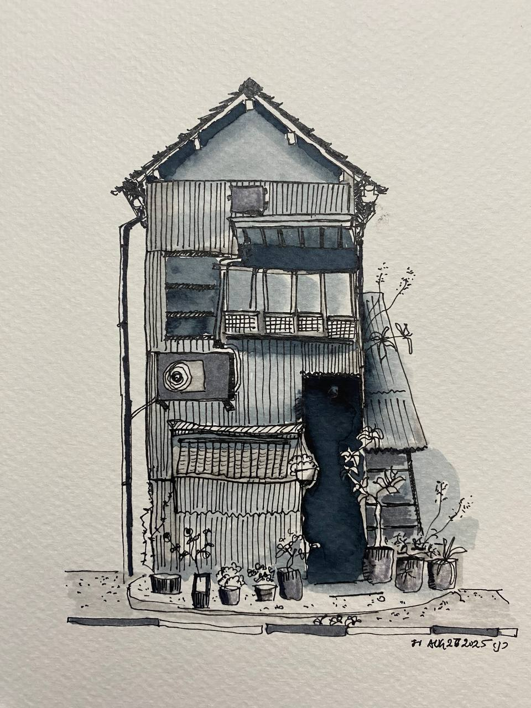

A small studio of works on paper — fineliner, fountain pen, watercolor, pencil, and ink wash. Recent pieces and short films from the studio, below.

I'm jrajan — an IT professional by trade, an artist by practice, and a father of two at home.
I studied B.Tech in Information Technology, and I've spent my career in software. Drawing has always been my quieter parallel life — the place I go when I want to slow down and notice things.
Most evenings, you'll find me at the desk with ink, watercolor, or a pencil — making small marks until something honest shows up on the page.